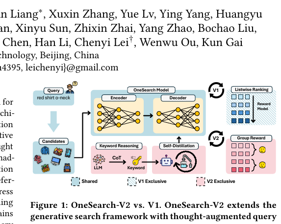
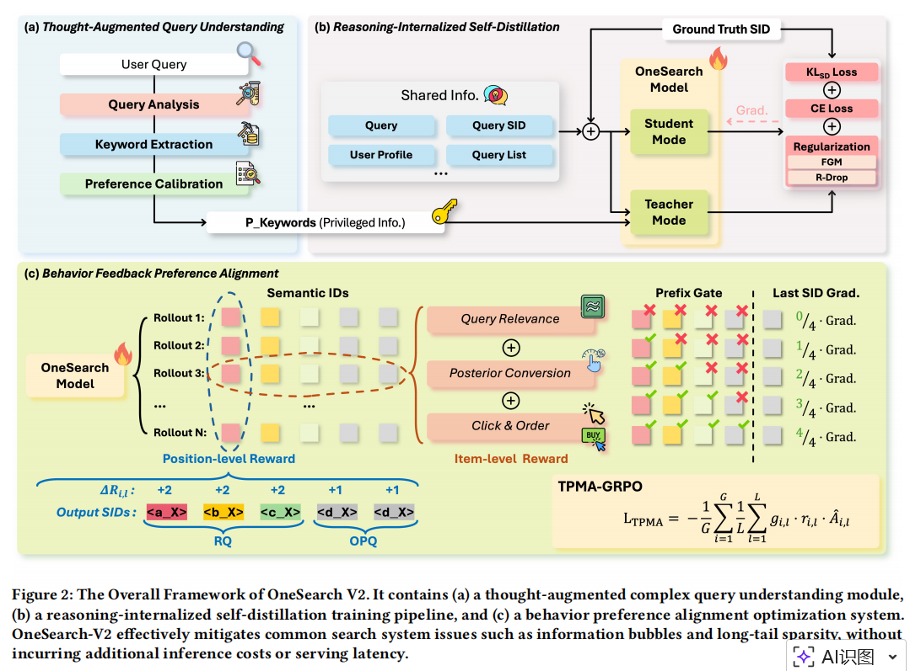
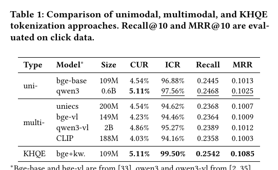
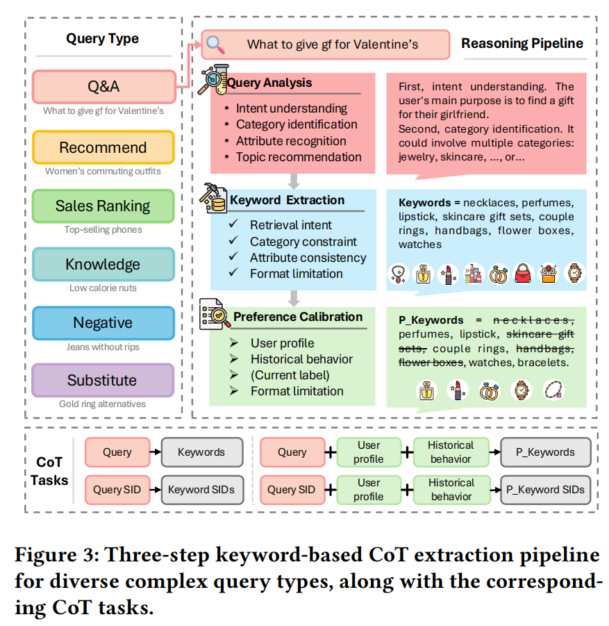
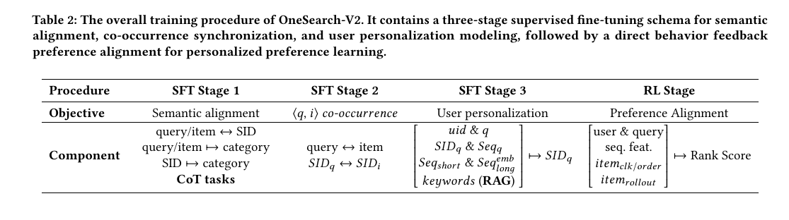
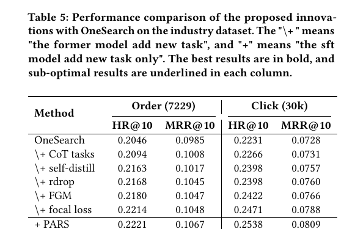
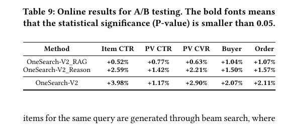
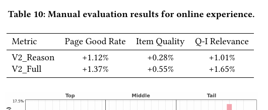

OneSearch-V2
1. 基本信息
- 标题：OneSearch-V2: The Latent Reasoning Enhanced Self-distillation Generative Search Framework
- 作者：Ben Chen, Siyuan Wang, Yufei Ma, Zihan Liang, Xuxin Zhang, Yue Lv, Ying Yang, Huangyu Dai, Lingtao Mao, Tong Zhao, Zhipeng Qian, Xinyu Sun, Zhixin Zhai, Yang Zhao, Bochao Liu, Jingshan Lv, Xiao Liang, Hui Kong, Jing Chen, Han Li, Chenyi Lei, Wenwu Ou, Kun Gai
- 机构：Kuaishou Technology
- 时间：2026-03-25（arXiv v1）
- 链接：https://arxiv.org/abs/2603.24422
- 关键词：Generative Search、Latent Reasoning、Keyword-based CoT、Self-distillation、Preference Alignment
- pdf位置：
C:\Users\chaol\Desktop\推荐论文阅读\GRS\OneSearch-V2_2603.24422.pdf - 笔记位置：
论文笔记/精排/生成式搜索/OneSearch-V2.md - 分类：精排 / 生成式搜索
1.1 相关论文
- OneSearch：直接前作。OneSearch 先把电商搜索改写成统一 generative search，V2 则继续在这个骨干上补上复杂 query 理解、推理能力内化和直接行为反馈对齐，而且目标是“不增加线上推理成本”。
2. 一句话总结
这篇论文不是重做 OneSearch 的生成式检索骨架，而是试图把 复杂 query 理解 -> 潜在用户意图推理 -> 偏好对齐 这三块原本靠显式 CoT 或独立 reward model 才能做好的能力，压进同一个生成模型的参数里。它的关键手段是 关键词化 CoT + 输入不对称自蒸馏 + 按 SID 层级做 credit assignment 的 TPMA-GRPO，从而让模型在保持 V1 同等部署形态的前提下，显著提升复杂 query、长尾 query 和冷启动 item 的效果。
3. 论文在解决什么问题
3.1 V1 已经统一了生成式搜索，但还有三个结构性短板
作者把 OneSearch-V1 的瓶颈概括成三类：
- 复杂 query 理解不够深：搜索词通常只有 2 到 3 个词，但很多并不直接指向一个明确商品，比如 “indoor fitness equipment” 可能对应跑步机、哑铃，但不该飘到山地车。对否定式、问答式和长尾 query，这个问题更严重。
- 用户上下文推理不够深：V1 虽然能用历史行为做匹配，但仍然主要在拟合共现和日志，难以像 LLM 那样从用户上下文里推断“潜在但精确”的购物意图。论文举的例子是：用户搜 “seasonal fresh flowers” 时，系统应该考虑季节、花材和过敏信息，而不只是回放历史高转化商品。
- reward system 脆弱：V1 依赖单独训练的 reward model 和周期性更新的偏好系统，容易受历史日志采样偏置影响，进一步放大 information bubble 和 long-tail sparsity。
3.2 Figure 1：V2 相对 V1 真正新增了什么

Figure 1 画得很简，但其实已经把整篇论文的核心说完了。V2 相比 V1 不是只加一个 reasoning 模块，而是同时改了三件事：
- 在 query 侧加入 Keyword Reasoning / CoT：先让外部大模型把复杂 query 分析成高信息密度的关键词化推理。
- 把 reasoning 通过 self-distillation 内化到 OneSearch 本体里：避免线上再显式生成 CoT。
- 把原来依赖独立 reward model 的 listwise ranking，换成直接基于行为反馈的 group reward / TPMA 对齐。
我的理解是，V2 的目标不是“让搜索模型也能讲出推理链”，而是让它保留推理带来的判别力，但把推理过程藏回模型参数里，最终仍然保持 V1 那种工业上可部署的直接生成范式。
4. 方法总览
4.1 Figure 2：整套 V2 可以看成三条增强线

Figure 2 对应整篇方法部分的三段结构：(a) Thought-Augmented Query Understanding用 LLM 先做 query analysis、关键词抽取和偏好校准，把复杂 query 变成更适合检索的小而密的关键词集合。(b) Reasoning-Internalized Self-Distillation教师看到带关键词的输入，学生看到不带关键词的输入；两者共享同一套参数，只用输出分布的差异来蒸馏 reasoning。(c) Behavior Feedback Preference Alignment不再依赖单独 reward model，而是直接用 relevance、CTR、click/order 和 SID 前缀匹配来做 TPMA-GRPO。
一个很重要的背景是：V2 没有推翻 V1 的 SID/tokenization 主体设计。 它更多是在 V1 之上重做 query understanding、训练流程和偏好对齐。
4.2 3.1 为什么 V2 仍然坚持 V1 的 KHQE 单模态 SID

3.1 的标题其实很说明问题：作者先问“多模态还是单模态 SID tokenization 更适合电商搜索”，最后得出的答案是，V2 依然应该沿用 V1 的 KHQE 路线，而不是把 item 图文视频直接塞进统一多模态编码。
作者给出的理由很实际：
- 搜索要求 query 和 item 在同一个 tokenization 空间里有很强的语义约束；
- 但 query 是单模态文本，item 却是多图、多属性、甚至多视频的多模态对象；
- 多张图经常带互斥属性，冗余属性又很多，容易把真正关键的商品属性冲淡。
Table 1 的结论很明确：
- 单模态 text-only 编码整体优于多模态编码；
- 直接做 unified multimodal encoding 或 separate-then-concatenate 都不理想；
- V1 的
KHQE最好，Recall@10 = 0.2542、MRR@10 = 0.1085，同时ICR = 99.50%。
这里最值得记的是：V2 的 reasoning 增强，并没有把 V1 的离散 SID 世界推翻掉，反而进一步证明了“先抽核心关键词，再做统一 tokenization”这条电商搜索路线是合理的。
4.3 3.2 Thought-Augmented Query Understanding：把长 CoT 压成可检索关键词

Figure 3 展示的是这篇论文最有工业味的一步。作者并不想在线上生成一整段长 CoT，而是把 CoT 当成离线老师，最后只保留对检索真正有用的关键词。
4.3.1 三步关键词 CoT 流水线
整个 pipeline 分 3 步：
- Query Analysis
先让 LLM 按 4 个维度分析 query：
- intent understanding：用户到底是在搜商品、店铺还是直播间
- category identification：从粗到细判断可能类目
- attribute recognition：抽显式属性，不做无根据扩展
- topic recommendation：在满足类目和属性约束下，给出候选主题或商品
- Keyword Extraction 只对 merchandise retrieval intent 做关键词抽取，并且只从 topic recommendation 中抽；如果 topic 为空，再回退到 category 和 attribute。这里会做同义词合并、去营销词、保留模型号等约束，最多输出 8 个关键词。
- Preference Calibration
再结合 user profile、近期搜索、近期点击，对关键词做最后一轮个性化筛选或补全，得到更贴近用户偏好的
P_Keywords。
这一步最关键的取舍是：不是保留自然语言推理链，而是保留“能驱动检索”的关键词化推理结果。
4.3.2 CoT 怎么真正进入训练
论文没有让模型显式输出长 CoT，而是把这些结果转成 SFT Stage 1 的额外任务。Figure 3 底部可以看出，作者把 query -> keywords / personalized keywords 及其 SID 版本也一起并入训练，让模型在语义对齐阶段就学会1：
- 一个复杂 query 可能对应哪些商品主题；
- 哪些主题需要受类目和属性约束；
- 哪些主题会因用户偏好而被保留或剔除。
这块实验很有意思：
+ CoT tasks能稳定提升；- 直接显式生成 CoT（
+ direct CoT）会严重伤害结果； - 在线把关键词作为额外输入（
+ RAG）能再涨，但会带来不可接受的额外延迟。
也就是说，作者真正想要的是“先借助 CoT 找到更强监督，再把它蒸馏掉”，而不是一直依赖 CoT 本身。
4.4 Table 2：V2 的训练流程是怎么接起来的

Table 2 把整套训练流程概括成：
- SFT Stage 1: Semantic Alignment
继续做
query/item ↔ SID、query/item ↦ category等基础语义对齐，并加入 CoT 相关任务。 - SFT Stage 2: Co-occurrence Synchronization
学
query ↔ item和SID_q ↔ SID_i的共现关系。 - SFT Stage 3: User Personalization
输入
uid + q + SID_q + Seq_q + Seq_short + Seq_long^{emb} + keywords，学个性化生成 item SID。 - RL Stage 再用直接行为反馈做 preference alignment。
这张表说明：V2 不是单点 trick，而是把 query reasoning 插到了最前面的 semantic alignment，把 self-distillation 放在个性化建模阶段，再把 TPMA-GRPO 放到最后的偏好对齐阶段。
4.5 3.3 Reasoning-Internalized Self-Distillation：让老师多看关键词，学生少看关键词
V2 最核心的方法细节在 3.3。它的做法非常克制：既不加 latent token，也不加 projection head，更不改模型结构，而是只利用“输入信息不对称”来蒸馏 reasoning。
教师和学生共享同一个模型 ，区别只在输入：
也就是说：
- teacher 能看到关键词化 CoT；
- student 看不到关键词；
- 两条路径共享同一组参数，只有输入信息量不同。
然后作者要求 student 去拟合 teacher 的输出分布：
这里有个特别重要的点：蒸馏监督是逐个 SID token 位置上的 logit 分布，不是只对一个 latent token 做回归。 这解释了它为什么会比 CODI 这类 hidden-state alignment 更适合搜索里的离散 SID 生成。
基础损失是：
4.5.1 为什么这种自蒸馏是成立的
这套设计成立的隐藏条件是：teacher 和 student 的差别只能来自“是否看到关键词”这件事，而不是架构差别。 这样 student 一旦学会在少信息条件下逼近 teacher 分布，就等价于把“关键词带来的 reasoning 增益”内化进了同一套模型权重里。
换句话说，这里不是 teacher 教一个更小的 student，而是同一个模型用“富信息视角”教“缺信息视角”。最终保留下来的不是关键词本身，而是看到关键词时形成的判别偏好。
4.5.2 为了让这种蒸馏稳定，作者又补了三层约束
论文认为信息不对称会让 student 周围的 loss surface 变得更尖锐，于是加了三层稳定器：
- R-Drop 对 student 做两次带不同 dropout mask 的前向，最小化两次输出分布的对称 KL，逼它在缺少关键词时也保持预测稳定。
- FGM 在 embedding 上沿梯度方向做扰动，再跑一次前后向，让模型在缺关键词输入附近的 embedding 空间里也别太脆。
- Focal Loss 处理长尾 SID 词表的类别不平衡。
总目标变成：
我的理解是，这里最聪明的地方不是某一个正则本身，而是作者先明确诊断了“信息不对称蒸馏”会导致什么类型的不稳定，然后分别在输出分布、输入 embedding 和类别分布三层去补洞。
4.6 3.4 Behavior Feedback Preference Alignment：把 SID 的层级结构写进 RL
V1 的偏好学习依赖独立 reward model。V2 则认为这件事在搜索里有两个问题：
- 奖励模型容易被历史日志采样偏置绑死；
- 标准 GRPO 把整个 SID 序列上每个 token 的 advantage 设成一样，但搜索里的 SID 明明是有严格 coarse-to-fine 层级的。
因此作者一方面直接用行为反馈构造 reward，另一方面改写 token 级 credit assignment。
4.6.1 先构造 item-level reward
作者把 item-level reward 设计成三类信号的加和：
- Relevance Reward
用现有 relevance system 把
<query, item>分成3-Excellent / 2-Related / 1-Mismatch / 0-Irrelevant。 - Posterior CTR Reward 用 V1 已有的 calibrated posterior CTR 作为稠密反馈，但做了截断，避免高 CTR 但低相关性的 item 抢走全部奖励。
- Click / Order Reward 如果生成结果命中了用户点击或购买过的 item，对应给额外奖励，且购买强于点击。
也就是说，V2 的 reward 不是只看 conversion，而是强制把 query-item relevance 和 business value 一起纳入。
4.6.2 标准 GRPO 为什么不够
标准 GRPO 的问题在于：它把同一条生成序列里所有位置的 advantage 都设成同一个值。
但 SID 在这里是 5 个 token 的分层编码：
- 前面 token 更像粗粒度类目/共享语义；
- 后面 token 更像细粒度差异属性。
如果前缀都错了，后缀 token 再对也没有意义；如果前缀对了、后缀错了，那说明问题只出在细粒度区分。把所有位置一视同仁，等于把这两个完全不同的错误混为一谈。
4.6.3 TPMA-GRPO 到底在做什么
作者提出的 TPMA-GRPO 可以拆成 4 步：
-
Prefix Reward 对每个 rollout，在位置 计算它与任一 ground-truth SID 前缀的最大累计匹配程度：
这里的核心意思是：不是只看整条 SID 对不对，而是看“到第 位为止，你和真实目标前缀到底对齐了多少”。
-
Marginal Contribution 前两级共享层次语义更重要，所以作者把前两位 token 的奖励权重设得更高：
这背后的假设很合理：如果粗粒度类目都错了，后面细粒度属性再精确也救不回来。
-
Position-level Advantage 再对每个位置单独在 group 内做归一化，得到 ，这样每个位置只对自己那一级的贡献负责。
-
Prefix Gate 这是整套方法最关键、也最容易被忽略的一步：
它的含义是：
- 如果前缀完全正确，门就完全打开；
- 如果前缀完全错误，后面 token 的梯度就直接被压成 0；
- 所以模型会先学粗粒度，再学细粒度。
这个 gate 就是 TPMA 真正成立的隐藏条件。后位 token 的 credit 只有在前缀合法时才有意义，否则继续优化只是在错误分支里越走越远。
最后再把 position-level advantage 和 item-level reward 的 group-normalized advantage 合起来，得到最终 loss。我的理解是，这一步本质上是把“SID 是层级结构”这件事，从编码设计一路写进了 RL 的 credit assignment 里。
5. 实验与结果
5.1 Table 5：离线结果证明三条增强线都有效

Table 5 是最重要的离线结果表。
先看 OneSearch 到 OneSearch-V2 的整体提升：
- order
- HR@10：
0.2046 -> 0.2314 - MRR@10：
0.0985 -> 0.1151
- HR@10：
- click
- HR@10：
0.2231 -> 0.2568 - MRR@10：
0.0728 -> 0.0833
- HR@10：
更有价值的是中间路径也能对上设计意图：
+ CoT tasks先验证关键词化 query understanding 确实有用；+ self-distill是最大单步增益，说明 reasoning 内化不是虚涨；+ rdrop / + FGM / + focal loss继续稳步加成；- 在偏好对齐阶段，
+ TPMA明显优于标准+ GRPO； - 最终全量 V2 最好。
论文还报告了 valid SID rate 持续上升，最终 click / order 都接近 99%，说明这些优化并没有破坏 SID 生成的结构有效性。
5.2 为什么作者坚持“self-distill 比 latent token 更适合这里”
这一点在 ablation 和后续分析里讲得很清楚，我觉得值得单独记下来：
- 自蒸馏在每个 SID 位置都给 logit-level 监督，而不只是对一个 latent token 做 hidden-state 回归；
- teacher 和 student 共享权重，只通过输入信息差构造 teacher-student gap，更贴近搜索里的部署约束；
- CODI 风格的 L1 hidden-state alignment 和 logit KL 结合后反而会互相打架，因为“逼近 teacher 几何形状”和“提高最终 SID 预测”并不是完全同一个目标。
所以作者的结论不是“latent reasoning 没用”，而是：在离散 SID 生成场景里，最有效的 reasoning internalization 方式，是逐位置输出分布蒸馏，而不是额外 latent token。
5.3 Table 9 和 Table 10：线上收益不仅是点了更多，还更相关

线上 A/B 用了三个版本递进验证：
OneSearch-V2_RAG只加 CoT 任务和关键词输入，已经能稳定涨：- Item CTR
+0.52% - PV CTR
+0.77% - Buyer
+1.04% - Order
+1.07%
- Item CTR
OneSearch-V2_Reason把 Stage 3 改成 self-distillation 后，再明显往上走：- Item CTR
+2.59% - PV CTR
+1.42% - PV CVR
+2.21% - Buyer
+1.50% - Order
+1.57%
- Item CTR
- 最终 OneSearch-V2
- Item CTR
+3.98% - PV CTR
+1.17% - PV CVR
+2.90% - Buyer
+2.07% - Order
+2.11%
- Item CTR

人工评估也说明收益不是“更会蹭点击”：
- Page Good Rate
+1.37% - Item Quality
+0.55% - Query-Item Relevance
+1.65%
这和论文的主张是一致的：V2 的收益来自更深的 query 理解和个性化推理，而不只是 reward 把热门 item 往前推。
5.4 Further Analysis：收益最明显出现在 V1 最难的地方
作者后面的分析很有说服力：
- 长尾 query 提升最大
- long-tail：
+5.37% - high-frequency：
+5.01% - middle-frequency：
+4.88%
- long-tail：
- 冷启动 item 提升也最大
- cold item：
+6.16% - warm item：
+5.69% - hot item：
+4.81%
- cold item：
这说明 V2 真正补的不是热门、头部、强日志 query，而是 V1 最依赖“额外推理”的那些角落场景。
6. 我的理解与局限
6.1 这篇论文真正的创新，不是“让模型会 CoT”，而是“把 CoT 蒸馏掉”
如果只看标题，很容易把它理解成“搜索里用了 latent reasoning”。但从方法和实验看，真正值钱的是：
- 先用外部 LLM 帮系统把复杂 query 打开；
- 再把这些推理痕迹压缩成关键词；
- 最后再把关键词带来的增益内化到同一个生成模型里。
所以它更像一种工业化的 reasoning deployment 方案，而不是让线上继续显式思维链推理。
6.2 V2 其实是一篇很“克制”的后续工作
它没有推翻 V1 的 tokenization、encoder-decoder 或整体 serving 形态，而是保守地在现有成功系统上补 reasoning 和 alignment。这个取向很实用，但也意味着：
- 论文默认 V1 的 SID 编码已经足够好；
- multimodal unified tokenization 仍然没真正解决；
- item 世界持续变化时，SID 体系还是需要维护。
6.3 TPMA 值得记住，因为它把“分层 SID”真正用到了训练目标里
很多 generative retrieval 工作虽然也用层级 SID，但训练时仍然把整条序列当成均匀 token 序列。V2 的 TPMA 则明确承认：
- 早期 token 更重要；
- 后期 token 的 credit 依赖前缀是否正确；
- reward 需要同时考虑 relevance 和 conversion。
这套思路我觉得不只适用于搜索，只要输出空间本身有 coarse-to-fine 结构，都值得参考。
7. 记忆点
如果以后只回忆这篇论文，我会抓住下面 5 个点：
- V2 是 V1 的 reasoning-enhanced 版本，不是重写 OneSearch。
- 关键词化 CoT 才是 query understanding 的真正载体，长 CoT 只是老师，不是最终输入。
- self-distillation 的关键是输入信息不对称 + 同权重共享，而不是额外 latent token。
- TPMA-GRPO 的关键是 prefix gate，后位 token 只有在前缀对的时候才值得学。
- 收益最明显落在复杂/长尾 query 和冷启动 item 上，这正是 reasoning 应该兑现价值的地方。
Footnotes
-
将语义理解转移到初始对齐阶段 ↩